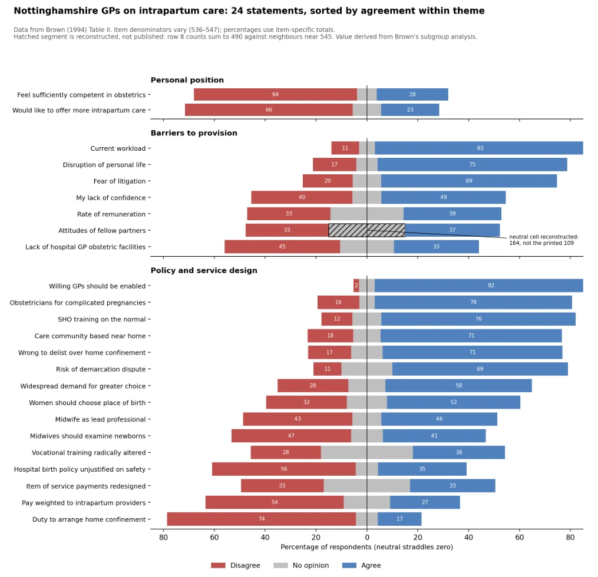

Module 3 / Collaborative Learning Discussion
Brown Table II: the figure and the discussion
A published table with one row that did not add up, the figure that made the repair visible, and the position I was left with after a peer read the same row differently.
Initial post
Posted 17 August 2026.
Brown (1994) labels Table II as the responses of 550 general practitioners but reports no item-level denominators. For 23 rows, this omission is recoverable because the printed percentages reconcile with row totals ranging from 536 to 547. Row 8 does not. Its counts sum to 490, roughly 55 fewer than the rows around it, which sit near 545, a discrepancy that rounding cannot explain. Its percentages also sum to only 90%. Brown’s own subgroup analysis corroborates the agree and disagree cells. This leaves the neutral category as the only cell that can be wrong and indicates a value of approximately 164 rather than the printed 109.

Text description of Figure 1.
Diverging horizontal bars for 24 statements in three blocks. Disagree is red and extends left of a central line, agree is blue and extends right, and no opinion is grey and straddles the line. Within each block the statements are ordered by the percentage who agreed. In the row for attitudes of fellow partners, the grey neutral segment is hatched and labelled as reconstructed: 164, not the printed 109. The table lists the disagree and agree percentages printed on the bars.
| Statement | Block | Disagree (%) | Agree (%) |
|---|---|---|---|
| Feel sufficiently competent in obstetrics | Personal position | 64 | 28 |
| Would like to offer more intrapartum care | 66 | 23 | |
| Current workload | Barriers to provision | 11 | 83 |
| Disruption of personal life | 17 | 75 | |
| Fear of litigation | 20 | 69 | |
| My lack of confidence | 40 | 49 | |
| Rate of remuneration | 33 | 39 | |
| Attitudes of fellow partners | 33 | 37 | |
| Lack of hospital GP obstetric facilities | 45 | 33 | |
| Willing GPs should be enabled | Policy and service design | 2 | 92 |
| Obstetricians for complicated pregnancies | 16 | 78 | |
| SHO training on the normal | 12 | 76 | |
| Care community based near home | 18 | 71 | |
| Wrong to delist over home confinement | 17 | 71 | |
| Risk of demarcation dispute | 11 | 69 | |
| Widespread demand for greater choice | 28 | 58 | |
| Women should choose place of birth | 32 | 52 | |
| Midwife as lead professional | 43 | 46 | |
| Midwives should examine newborns | 47 | 41 | |
| Vocational training radically altered | 28 | 36 | |
| Hospital birth policy unjustified on safety | 56 | 35 | |
| Item of service payments redesigned | 33 | 33 | |
| Pay weighted to intrapartum providers | 54 | 27 | |
| Duty to arrange home confinement | 74 | 17 |
Figure 1 presents all 24 statements as diverging bars divided into three blocks. Brown printed the statements as one undifferentiated list, even though seven complete the same question about what discourages GPs from providing intrapartum care, while two describe the doctors’ own willingness and perceived competence. The three blocks represent my interpretation of the questionnaire rather than Brown’s original layout. Within each block, I ordered the statements by the percentage of respondents who agreed.
The coding was straightforward. The harder question was what a responsible figure should do with a row that could be reconstructed but not reproduced as printed. Plotting 109 preserves fidelity to the published table but depicts a distribution that cannot exist. Substituting 164 without explanation produces a coherent graph that silently absorbs the error and erases the work required to identify it. I therefore plotted the reconstructed value and marked it explicitly as reconstructed. A cleaning decision that changes what the reader can see must remain visible to the reader.
Summary post
Posted 23 September 2026.
My initial post treated Row 8 as reconstructable but not reproducible as printed, and replaced its neutral figure of 109 with roughly 164. A peer reads the same row differently. If 490 of Brown's 550 respondents answered the item, then 60 responses are missing, and the printed figure may be correct as published. Both readings fit the 90 percent row total.
The printed percentages separate them. On a denominator of 550, Row 8's 178 disagree responses would print as 32 percent. Brown prints 33. That figure, with the agree cell's 37, fits only a denominator between 542 and 547, inside the 536 to 547 the other rows use. The percentages therefore behave as though about 545 people answered, which places the shortfall in the printed counts rather than in unanswered questionnaires, and implies a neutral count near 164. Row 16 prints the identical 109 (20) in the same column, which is a plausible mechanism, not a finding.
Another peer is right that marking a cell as reconstructed makes the intervention visible. It shows nothing more. Their proposal of independent verification is the stronger check, but that check belonged to Brown before publication. Wilkinson et al. (2016) ground the remaining standard in reusability: data stay reusable when they carry the provenance a later analyst needs to judge them. My figure records that I replaced 109. It does not record the denominator test that justified the replacement. A third peer questioned whether the figure implies a compulsory duty to arrange home confinement. It reports agreement with Brown's 1994 wording, not current policy.
The position I am left with is not the one I started from. My initial post rested the correction on subgroup figures I cannot locate in Brown. The first peer's reading made me test it, and the test, not the hatching, is what the figure should carry.
References
- Brown, D.J. (1994) 'Opinions of general practitioners in Nottinghamshire about provision of intrapartum care', British Medical Journal, 309(6957), pp. 777-779. Available at: https://doi.org/10.1136/bmj.309.6957.777.
- Wilkinson, M.D. et al. (2016) 'The FAIR Guiding Principles for scientific data management and stewardship', Scientific Data, 3, article 160018. Available at: https://doi.org/10.1038/sdata.2016.18.